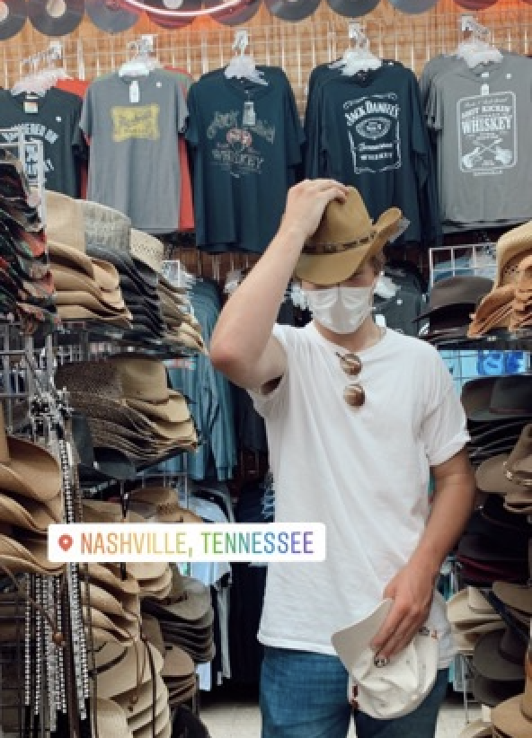
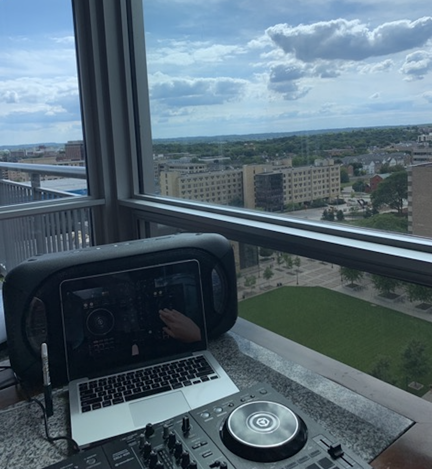
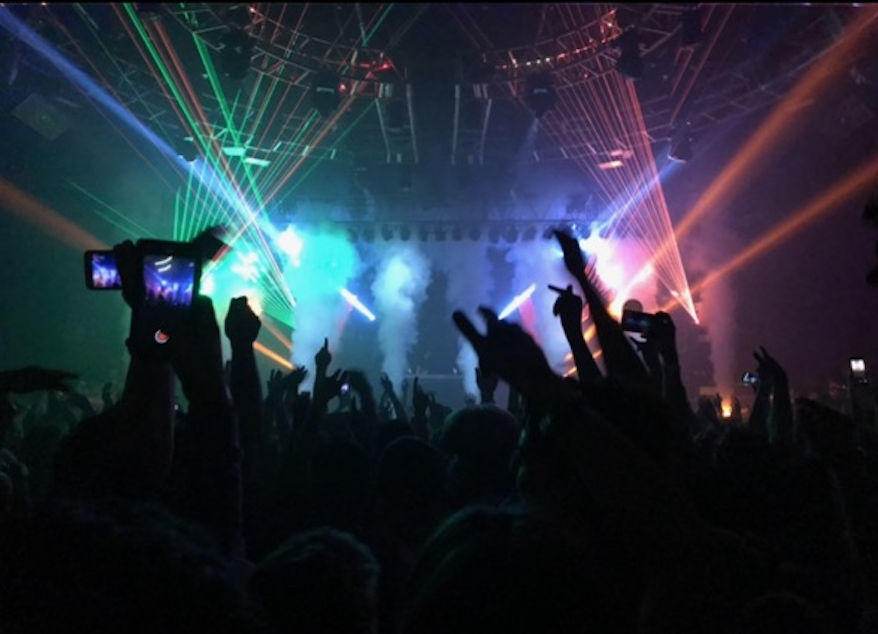

My favorite genre of music is country! I love the twang of a guitar and the drawling accents of various country artists. My favorite country artists include Luke Bryan, Johnny Cash, and Chris Stapleton. I have been to two Luke Bryan concerts in my life and I have a lot of his songs saved in my iTunes library. My favorite song of Luke Bryan's is "Rain is a Good Thing". I also enjoy Chris Stapleton's music, especially his song "Tennessee Whiskey" because it brings back a lot of great memories I have from summers past. I really love country music!
I also enjoy more old-school country music from artists like Johnny Cash. My favorite song by Johnny Cash is "Ring of Fire". This past summer of 2020, I took a trip to Nashville, Tennessee, where I visited the Johnny Cash Museum. It was very interesting to learn more about the life and works of a country artist whose songs I love to listen to!
I very much enjoy electronic dance music, otherwise known as EDM. There are various sub-genres of electronic dance music and I am a fan of most of these sub-genres. These sub-genres of electronic dance music include, but are not limited to, house music, dubstep, breakbeat, and techno. My favorite sub-genre of electronic dance music is house music. My favorite house music artist is called Tchami. He is a French DJ. I have attended many house music concerts throughout my life and I hope to continue to attend more once they are back on following the COVID-19 pandemic! I am such a fan of house music that I have even purchased a mixing board and practiced mixing songs as a beginner-level DJ!
I love rock and roll music, specifically old-school rock and roll from the 70's and 80's. I think that the movie "Dazed and Confused" has one of the best movie soundtracks of all time. I absolutely love the electrifying feeling of a loud guitar rocking out! My favorite bands include Aerosmith, Motley Crue, and Van Halen.
